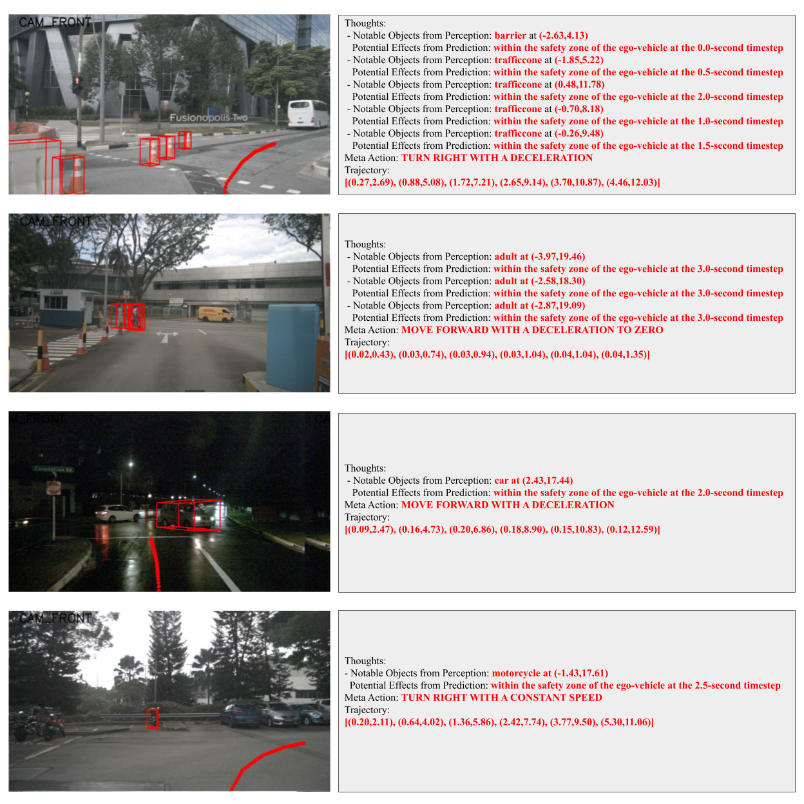

We present a simple yet effective approach that can transform the OpenAI GPT-3.5 model into a reliable motion planner for autonomous vehicles. Motion planning is a core challenge in autonomous driving, aiming to plan a driving trajectory that is safe and comfortable. Existing motion planners predominantly leverage heuristic methods to forecast driving trajectories, yet these approaches demonstrate insufficient generalization capabilities in the face of novel and unseen driving scenarios. In this paper, we propose a novel approach to motion planning that capitalizes on the strong reasoning capabilities and generalization potential inherent to Large Language Models (LLMs). The fundamental insight of our approach is the reformulation of motion planning as a language modeling problem, a perspective not previously explored. Specifically, we represent the planner inputs and outputs as language tokens, and leverage the LLM to generate driving trajectories through a language description of coordinate positions. Furthermore, we propose a novel prompting-reasoning-finetuning strategy to stimulate the numerical reasoning potential of the LLM. With this strategy, the LLM can describe highly precise trajectory coordinates and also its internal decision-making process in natural language. We evaluate our approach on the large-scale nuScenes dataset, and extensive experiments substantiate the effectiveness, generalization ability, and interpretability of our GPT-based motion planner.

@article{mao2023gptdriver,
author = {Mao, Jiageng and Qian, Yuxi and Zhao, Hang and Wang, Yue},
title = {GPT-Driver: Learning to Drive with GPT},
year = {2023},
}